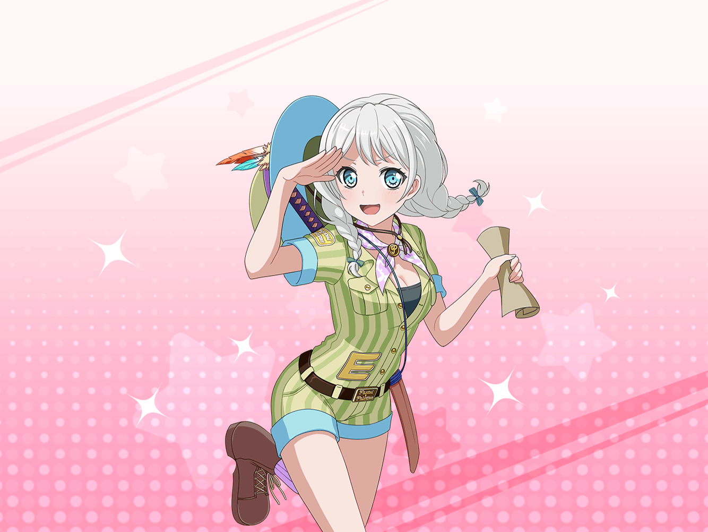

Pastel＊Palettesの事務所
イヴ
初めての、長時間のテレビ収録……
入念に準備しなければなりませんね……
イヴ
一体何から手を付ければよいのでしょうか……？
麻弥
イヴさん、何かお困りですか？
ジブンにできることだったら手伝いますよ
イヴ
あ、マヤさん。
実は準備って、何をすればいいのか考えていて……
麻弥
あー、なるほど
ジブンもどうしようかな、って困ってたんですよね
イヴ
それに、無人島に持っていくものって
どこで揃えたらいいのかも、わからなくて……
麻弥
うーん……あ、それなら！
今日の帰り、ショッピングモールに寄りませんか？
ホームセンターのお店が、新しくできたみたいですよ！
イヴ
ホームセンター……！
それはいい考えですね！
麻弥
じゃあ一緒に行って、
何を買うか決めましょうか！
イヴ
はい！ ありがとうございます、マヤさん！
麻弥
いえいえ。
ジブンも誰かと一緒に決めたいなって思ってたんで

ショッピングモール ホームセンター
イヴ
おー、役に立ちそうなものがいっぱいありますね、マヤさん！
イヴ
ここで準備すれば、
きっと無人島も、簡単に乗り越えられます！
麻弥
そうですね。
でも買うものは、慎重に選ばないと……
麻弥
あ、あっちの方に便利そうなものがたくさん売ってますよ。
行きましょう、イヴさん
イヴ
はい！
イヴ
うーん、これも便利そうですね……
あ、これも買っておきましょう！
麻弥
（い、イヴさん、いつの間にかカゴいっぱいに商品が……）
麻弥
い、イヴさん……これ全部買うんですか？
イヴ
はい！ 役に立ちそうなものは、
すべて買っておこう、と思いまして！
麻弥
でもイヴさん……
無人島には、各自ひとつしか道具は持ち込めないって……
イヴ
これは……バールのようなもの！
１度、実物を見てみたかったんです！
麻弥
（全然話を聞いてない……）
麻弥
ていうかそのバールのようなもの、
無人島で、いつ使うんですか！？
イヴ
うーん、思いつかないですけど……
でも、もしかすると、どこかで使うかもしれないです
麻弥
使わないです、絶対！
これはやめておきましょう！
イヴ
うーん、マヤさんがそういうのなら、
これはやめておきますね！
イヴ
では、この蚊取り線香は、どうですか？
きっと役に立ちますよ！
麻弥
確かにあったら、便利かもしれないですけど、
収録中に、蚊取り線香を焚くアイドルってどうなんですか……？
イヴ
これもダメですか……
なかなか難しいですね……
麻弥
それにこのキャットフード！
いつ、使うんですか？ 餌付けでもするんですか？
イヴ
それはもし、無人島でトラに出会ってしまった時のために……
麻弥
こんなんじゃ焼け石に水ですし、
そもそも無人島にトラは、たぶん出ないですよ！
イヴ
じゃあ、それもやめておきます……
でも、『備えあれば憂いなし』と言いますよ……？
麻弥
それとこれとは話が別です！
イヴ
あ、マヤさん！
あっちにもっと役に立ちそうなものが……！
見に行ってみましょう！
麻弥
ま、まだ見るんですか？
それよりも今まで見たものの中から
ひとつ持っていくものを選んだ方が……
イヴ
わあ、見てくださいマヤさん！
これ、モンキーレンチって言うんですよね？
無人島に壊れかけた過去の機械が眠ってるかもしれません！
イヴ
それを見つけた時、
このモンキーレンチで……！
麻弥
だ、だから、絶対に必要ないですってー！